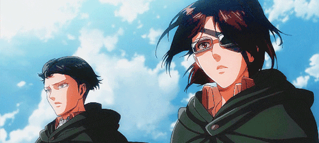
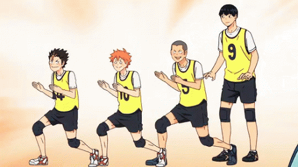

Já foi confirmado que Inosuke tem certa dificuldade para lembrar nomes. Dessa forma, o personagem geralmente erra muitas vezes, em muitas tentativas, até acertar o nome de um colega.
Nesse sentido, isso aconteceu com Tanjiro, quando Inosuke o chamou de Gonpachiro Kamaboko, Tontaro Itadaki, Kanjiro Anago e Monjiro.
A relação entre os irmãos Yoriichi e Michikatsu vem de referências da mitologia antiga japonesa. No mito, Amaterasu é a deusa shinto do sol e Tsukuyomi é o deus da lua.
Nesse sentido, a história de briga entre os deuses, que separou o dia da noite, se reflete em Demon Slayer, inclusive na criação da respiração da Lua e do Sol, que são opostas entre si.
Depois de se tornar um Oni, Muzan teve cinco esposas. Entretanto, por ser um personagem frio e sem empatia, praticou uma série de abusos psicológicos contra as mulheres que, então, tiraram própria vida.

Attack on Titam: Curiosidades
Já ocorreu uma grande referência de Attack on Titan na série de comédia Os Simpsons. A série é conhecida por fazer muitas referências e previsões bem certeiras, que levam diversão ao público.
O easter egg de Attack on Titan ocorreu quando Lisa, filha de Homer Simpson, apareceu vestida de Mikasa Ackerman, usando até mesmo o famoso cachecol vermelho.
Você sabia que as muralhas de Attack on Titan são reais? Pois é, elas, na verdade, foram inspiradas em verdadeiras muralhas que ficam localizadas na cidade Nordlingen na Alemanha. Essas paredes que abrigam pessoas são redondas e possuem pequenas vilas em seu interior, assim como na história.
O mangá de Attack on Titan entrou para o livro de recordes Guinness World Records por, surpreendentemente, produzir e lançar edições promocionais de mangás gigantes, com cerca de 1 metro de altura e quase 15kg. Foram lançadas 100 cópias no Japão, que esgotaram um pouquíssimo tempo. Assim, entraram para os recordes sendo os maiores mangás impressos da história.

Haikyuu!!: Curiosidades
Haikyuubu é o spin-off do mangá principal, escrito por um dos assistentes de arte de Furudate Haruichi. Esse spin-off tem desde a rotina de alguns personagens nos treinamentos até aus baseados em artes do mangaká
furudate gosta bastante de explorar os personagens em situações inusitadas, desde Kuroo e Yaku atrapalhando o encontro romântico do Daishou até o Yahaba e o Kyoutani adotando um cachorrinho
quem lê o mangá ja deve estar familiarizado com os famosos perfis dos personagens, com nome, sala de aula, colégio, altura, peso, comida favorita e a parte mais legal: as preocupações recorrentes